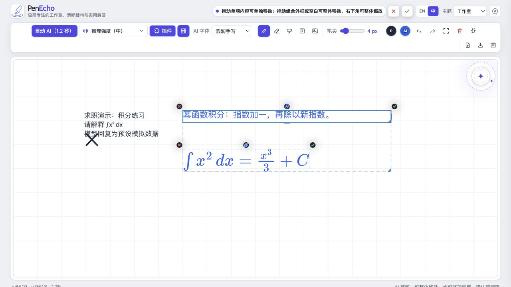

工作方式：需求描述与 AI 辅助搭建为主，代码理解和独立修改仍有限。项目均在开发中；英文文字交流需借助翻译工具，具体到岗与投入时长可协商。
VoxelBench 模型评测平台
自主提出体素世界评测设想，将生成作品的观察、检查点录分与模型比较组织成一套可操作流程。
项目解决的问题
“看起来不错”很难支撑模型比较。平台将两轮题面、评分定义、操作导览、模型榜单与作品预览连接起来，便于按同一标准检查作品。
开发进展与未完成部分
题面、评分计算和管理界面已实现，并已有首轮录分记录。当前成绩仍处于评测过程中，不能据此给出完整双轮模型优劣结论。
查看本地真实录分快照
快照生成于 2026 年 9 月 8 日。只展示录分进度与原始消耗，不展示不完整的总排名。“—”表示缺失，不代表零。模型名称沿用记录。
| 模型记录 | 首轮已录分项 | 续轮已录分项 | 首轮成本 USD | 用时 分钟 | Token |
|---|
助手已对平台评分与本地 API 完成限定范围的 32 项测试。本页快照只读，所有交互均不修改原始成绩。
PenEcho 智能白板改造
在现有白板上接入持久化 Agent，让手写内容、板书回复和工作区资料进入同一条使用流程。

项目解决的问题
希望在手写学习的过程中持续与 AI 互动，并保留会话与资料。项目将白板、智能体和本地工作区连接起来，减少在不同工具之间来回切换。
开源基础与改造内容
PenEcho 提供白板，pi 提供 Agent 运行时，Syncthing 提供同步。个人项目在这些基础上做桥接、会话与文件工具集成，并准备电脑和安卓使用方式。
已在独立求职副本中打开真实白板和桥接控制台，实际操作文字输入、手写笔迹、板书草稿确认与会话新建。模型回复采用预设数据，Syncthing 采用本地模拟服务；本次未进行安卓真机同步验收。
已核验桥接解析、文件工具边界，以及模拟上游下的真实本地桥接流程，包括会话切换与重启恢复。本次求职准备未重新完成安卓真机演示，也未用真实模型重跑板书效果。
白板、Agent 运行时和同步引擎来自开源项目。作品展示保留来源，不把上游功能描述为个人从零实现。
TriSoul 共识智能体
在 DeepSeek Harness 上扩展多候选生成与匿名表决，探索同一模型在不同关注点下协作完成任务。
项目解决的问题
单次生成可能遗漏任务要求或验证步骤。项目让候选分别生成，再对候选进行比较，并记录执行过程，便于观察协作策略的效果与代价。
开源基础与扩展内容
dsh 提供宿主、模型调用和原有界面。扩展内容包括共识插件、上下文处理、分层记忆、监控与设置页面。项目属于开源基础上的个人扩展实践。
项目包含多候选生成与匿名表决流程，以及观察候选、投票和执行记录的监控界面。源码与说明可在下方仓库查看；本页未提供真实模型在线运行服务。
共识、记忆隔离和上下文相关离线测试已进行定点核验。离线通过不等于真实模型任务一定成功。项目仍为实验性版本；多路调用会增加成本和延迟，表决也不能保证正确。
已有 DeepSWE 难题子集报告，但本作品集不将该子集成绩外推为整体模型能力，也不宣称普遍优于其他模型。